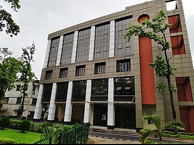

About US:
Our History
The National Institute of Technology, Durgapur (formerly Regional Engineering College, Durgapur), was established by an Act of Parliament in 1960 as one of the eight such colleges aimed to function as a pace setter for engineering education in the country and to foster national integration.It is a fully-funded premier Technological Institution of the Government of India and is administered by an autonomous Board of Governors. The Institute is a University which awards B.Tech., M.C.A., M.Sc., M.B.A.,M.Tech. and Ph.D. degrees to students after their successful specified courses.
The Institute imparts education in the disciplines of Chemical Engineering, Civil Engineering, Computer Science and Engineering, Electrical Engineering, Electronics and Communication Engineering, Mechanical Engineering, Metallurgical and Materials Engineering,Information Technology, Biotechnology, Physics, Chemistry, Mathematics, Environmental science, Materials Science and Management Studies.
As decided by the Ministry of Human Resource Development, Government of India, the procedure for selection of candidates for admission to the Bachelor Degree Courses in Engineering/Technology in National Institute of Technology Durgapur and in other NITs is on the basis of State Rank/ All India Rank (AIR) of AIEEE conducted by Central Board of Secondary Education, New Delhi, and the same is executed through counselling by Central Counselling Board, AIEEE under guidance from MHRD, GOI as per schedule notified by CCB. In addition to the normal intake, a few seats are reserved for Foreign Students who are nominated by the Ministry of External Affairs, Government of India, and the Indian Council for Cultural Relations, Government of India.

National Institute of Technology Durgapur, formerly known as Regional Engineering College, Durgapur, is a public technical university in the city of Durgapur in West Bengal, India. The campus has separate buildings for the departments of Computer Science Engineering, Electronics and Communication Engineering, management, Chemistry, Biotechnology. Each department has its own library, in addition to the central library, which holds more than one lakh resources including books, periodicals, and journals in print and electronic format. A new lecture hall complex named was inaugurated as a part of the institute's campus development plans, and it currently serves undergraduate students. The old Academic complex has several departments and is currently used for the academic classes and lectures for undergraduate, postgraduate, and doctoral students.
Campus Tour
The campus is spread across 187 acres of land and houses multiple buildings, laboratories and classrooms. It has state of the art infrastructure with modern amenities. The campus is also physically-handicapped friendly. Among the buildings, it has lush green gardens and huge trees.
More Info:
Library
NIT Durgapur has a modern central library with more than two and a half lakh documents consisting of technical books, reports, standards, compact disks, and back volumes of journals. The library also provides air-conditioned and Wi-Fi-enabled reading halls. It is situated opposite the High Voltage Laboratory. The library is an institutional member of DELNET (Developing Library Network), American Centre Library, Kolkata, National Programme on Technology Enhanced Learning (NPTEL), and Current Science Association, Bangalore. It is also a beneficiary Member of INDEST-AICTE (Indian National Digital Library in Engineering, Science & Technology) Consortium, which provides Desktop Access to high-quality e-resources (online journals) like IEL Online (IEEE/IEE Electronic Library), Springer Verlag's Link, Proquest, ACM journals, ASCE, ASME, Nature Magazine, Indian Standards (Intranet version) and ASTM journals & Standards, etc. It has a collection of several thousand E-Books on computer science (published by Springer).[16]
Academics
NIT Durgapur offers undergraduate and postgraduate programs in disciplines spanning engineering, science, architecture and management. The institute has 14 departments with about 224[6] faculty members and more than 4,000 enrolled students.Postgraduate education The institute offers graduate programs in several disciplines, including programs in science and engineering, leading to a Master of Science (M.Sc.) or Master of Technology (M.Tech.) degree respectively, as well as a programme in computer applications (MCA) and management (MBA).All of the institute's academic departments offer Doctorate of Philosophy (Ph.D.) degree programs.
Fests
The annual Techno-management festival of National Institute of Technology Durgapur, Aarohan is usually held in the month of February every year. It comprises various events like competitions, exhibits, workshops and talks from guest speakers. Aarohan 2021 was conducted in virtual mode.
Location
The Institute is located about 160 KMs north-west of Kolkata on the Howrah-Delhi main railway route and overlooking the National Highway No. 2(the great Grand- Trunk Road). The Institute spreads over an area of 187 acres of land. It is fully residential and co-educational. At present about 2500 boys and 500 girls reside in seven boys' hostels and two girls' hostels. The annual undergraduate intake is more than 1000 students.
Map
The address of Nit Durgapur is Priyadarshini Indira Sarani, Durgapur, West Bengal 713209, India. Contact Number of Nit Durgapur The contact number of Nit Durgapur is 0343 254 6397 .